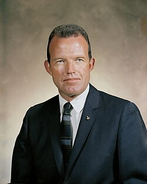

Gordon Cooper
Mercury and Gemini astronaut, 1927 to 2004

The youngest of the original Mercury Seven astronauts, who said he first saw a UFO while flying over West Germany in 1951. 1
He said that in May 1957 a camera crew at Edwards Air Force Base filmed a silent saucer-shaped craft landing, and that the film disappeared, presumably to Project Blue Book. He addressed the United Nations on UFOs in 1978 and maintained until his death that the government was hiding information; reviewers noted he relied on anecdotes. 1
Open in the interactive Watcher
Related
- Edwards AFB
- Project Blue Book Said film went to Blue Book
- NASA NASA astronaut
Sources
- Gordon Cooper Wikipedia